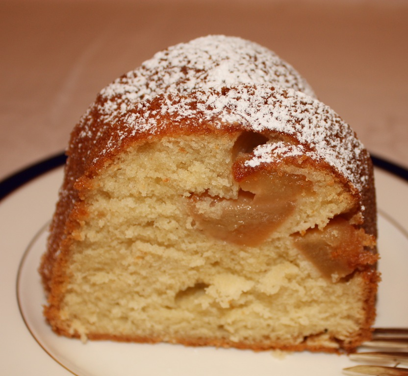

Pound Cake (Sorta)

Description
This is a simple recipe for a scaled down sort of pound cake (i.e. it's much less than a pound of everything), that comes from
a friend of a family friend.
Ingredients
- 1 stick butter
- 3/4 to 1 cup sugar
- 2 eggs
- 1 cup flour
- 1 teaspoon baking powder
- (Optional) 1 teaspoon vanilla, cardamom, or 1/2 teaspoon grated lemon rind
- (Optional) 1 cup fruit fruit (apples, apricots, pears, blackberries, or blueberries work well)
Steps
- Cream butter with sugar in a bowl.
- Add eggs, stir separately.
- Optionally add in vanilla, cardamom, or lemon rind.
- In another bowl add flour and baking powder and stir together.
- Fold in flour to creamed sugar and eggs and stir together.
- Pour mixture into 9-inch pan.
- Optionally add in fruit and lightly press into mixture.
- Bake in oven at 350°F for 70 minutes.